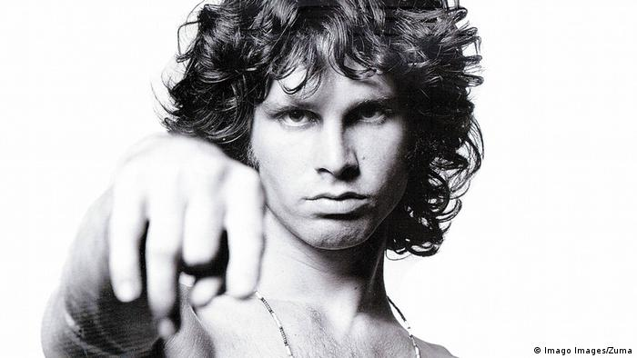

¿Qué tendrán los embarazos de Beyoncé que siempre generan tanta polémica? Estaba tardando, pero, finalmente, la historia se repite. Si con Blue Ivy ya se puso en duda que fuera ella la que la hubiera gestado en su vientre, ahora, con sus gemelos, ocurre lo mismo. A principios de mes, la cantante sorprendió al mundo entero con el anuncio de su embarazo. “Nos gustaría compartir nuestro amor y felicidad”, escribía en Instagram, “hemos sido bendecidos por partida doble. Estamos increíblemente agradecidos de que nuestra familia crezca en dos personas y agradecemos las muestras de cariño”.

Según algunos fans, Avril Lavigne lleva muerta años, y la mujer (de 32 años ahora) que hemos estado viendo es, en realidad, una doble. Los rumores empezaron en 2015 en un site brasileño. La aparición de la doppelganger brasileña Melissa Vandella hizo el resto. Los principales argumentos en los que se apoyan quienes defienden que Avril falleció lo hacen en el giro que la cantante dio a su estilo en 2004, después de sacar su segundo álbum y cuando su vestuario sufrió una transición hacia looks más femeninos, mientras que su música evolucionó del rock a matices más pop.
Casi 50 años después del fallecimiento de la estrella del rock en París, aún siguen surgiendo enigmas sobre qué pasó realmente, sobre todo alimentadas por la famosa frase del teclista de “The Doors”, Ray Manzarek, cuando dijo: “Me preguntó si todo esto no fue un truco de Jim”. También ayudó a levantar el edificio conspiranoico este comentario de su batería John Densmore: “¡La tumba es muy corta!”. De hecho, hay una teoría que afirma que sí, que efectivamente está muerto y murió en la capital francesa, pero que su cuerpo no está enterrado en el cementerio Père-Lachaisede, sino que fue recuperado por su familia, que lo llevó de vuelta a Estados Unidos y donde pudieron darle el último adiós.
Han pasado más de cuatro décadas desde que la actriz Natalie Wood muriera de forma misteriosa y prematura en 1981. Tenía 43 años y en aquel momento, ya era uno de los rostros más bellos del Hollywood clásico. Es recordada por películas míticas: Rebelde sin causa (1955) Centauros del desierto (1956), West Side Story (1961) o Esplendor en la hierba (1961). Su vida personal también estuvo muy ligada al cine, por su curiosa historia de amor con Robert Wagner, con el que llegó a casarse dos veces. Natalie Wood murió ahogada la noche del 29 de noviembre de 1981. Su cuerpo apareció flotando cerca de la isla de San Catalina al sur de California.

‼️Otros Misterio de Interes‼️
🧿🧿🧿🧿🧿🧿🧿🧿🧿🧿🧿🧿🧿🧿🧿🧿🧿🧿🧿🧿🧿🧿🧿🧿🧿🧿🧿🧿🧿🧿🧿🧿🧿🧿🧿🧿🧿🧿🧿🧿🧿🧿🧿🧿🧿🧿🧿🧿🧿🧿🧿🧿🧿🧿🧿🧿🧿🧿🧿🧿🧿🧿🧿🧿🧿🧿🧿🧿🧿🧿🧿🧿🧿🧿🧿🧿🧿🧿🧿🧿🧿🧿🧿🧿🧿🧿